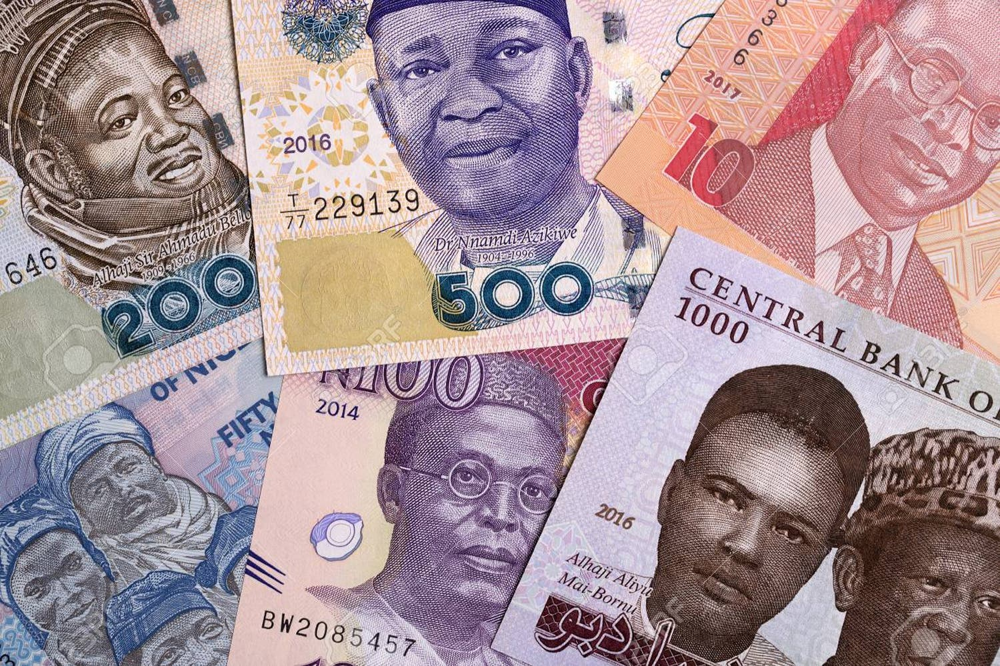
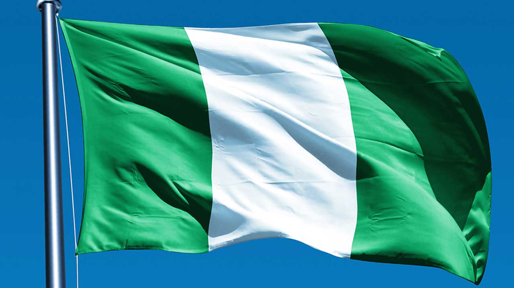
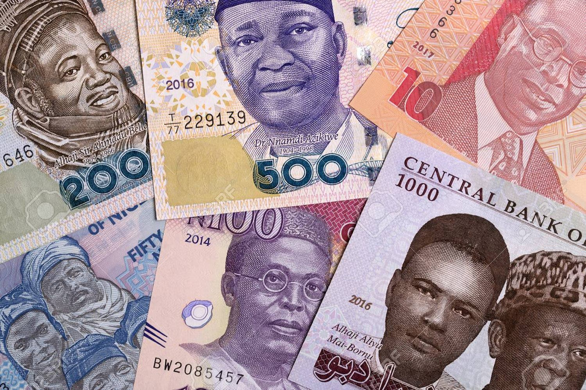
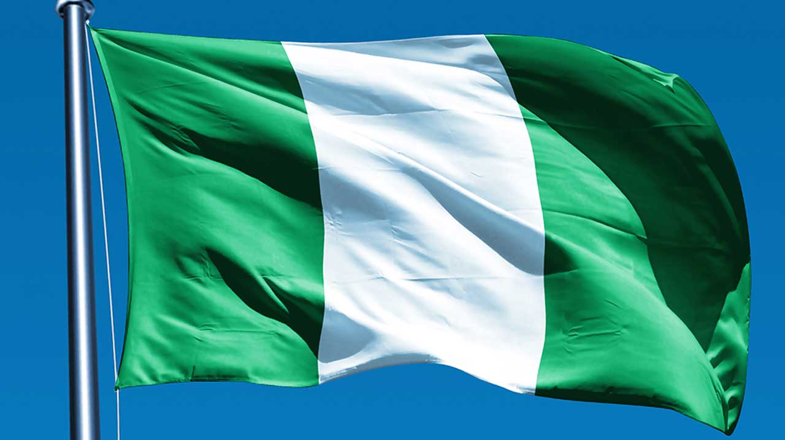

Background About Nigeria!
Nigeria is a country that exists on the massive continent of Africa, that has been nicknamed "Africa's Giant" due to its huge population, (largest on the continent), the diversity of its people and languages and its economy. Its capital is Abuja. It was colonised by the UK, and received freedom on October 1st, 1963. It used to be Lagos, but not anymore, for Abuja was built for the purpose to be the capital. Nigeria's current population is 223,804,632 people, and it is continuing to increase! Nigeria's flag are the colours green and white, a simple colour scheme. These colours symbolize something - the green represents the fruitful and naturally wealthy land and the white represents peace and unity. Nigeria's currency is the Nigerian naira, which unfortunately, is going through a steady decline. The national animal is an eagle and the coat of arms of Nigeria "consists of a black shield with a wavy white pall, symbolizing the meeting of the Niger and Benue Rivers at Lokoja. The black shield represents Nigeria's fertile soil, while the two supporting horses or chargers on each side represent dignity. The eagle represents strength, while the green and white twists of the torse on the top of the shield represent the rich soil." Taken from this link. The national flower of Nigeria is the Costus spectabilis. The current president of the country is Bola Tinubu. Despite all of these wondrous facts, truth is, the country is slowing dying, thanks to evident corruption and manipulation of the citizens in the country. It's devestating to see, and it is affecting other African countries as well. When will this country be restored to its former glory? The people cry for a change, and that's why most Nigerians actually end up emmigrate to countries like UK, Ireland and the United States. When you go through this section, I hope that some knowledge is gained and that you get to appreciate this country and all that it has to offer.
The Images of Nigeria!
 


